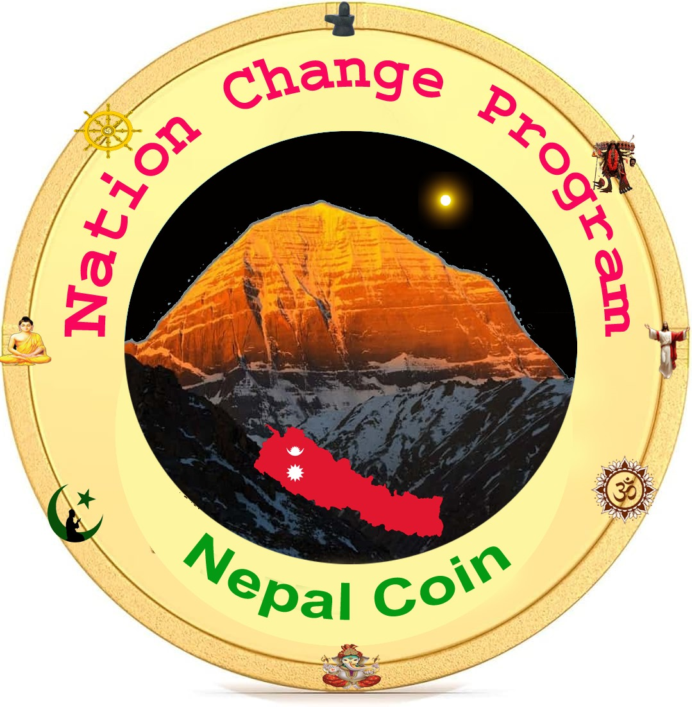

<!-- about -->
<div id="about" class="about">
    <div class="container">
        <div class="row">
            <div class="col-md-12">
                <div class="about_border">
                    <div class="row">
                        <div class="col-md-6">
                            <div class="titlepage text_align_left">
                                <h2>About Us</h2>
                                <p>Transforming nations for a better future.</p>
                            </div>
                            <div class="about_text">
                                <p>We are an international foundation dedicated to the Nation Change Program, with a
                                    vision to
                                    transform underdeveloped countries currently controlled by corrupt, opportunistic
                                    mafias into
                                    nations governed by the rule of law. Our revolutionary strategy is built around the
                                    AIEGS
                                    Formula—an Artificial Intelligence E-Government System—designed to drive national
                                    development and rapid growth.
                                </p>
                            </div>
                        </div>
                        <div class="col-md-6">
                            <div class="about_img">
                                <figure>
                                    
                                </figure>
                            </div>
                        </div>
                    </div>
                    <div class="row">
                        <p class="mb-4">Our team consists of intellectuals, social innovators, business professionals,
                            and dedicated
                            Nepalese youth, working in collaboration with respected organizations like the International
                            Institute of Infinitism, Canada, GK International UK, Youth for Nation, and Hong Kong
                            Gurung Social Groups, as well as various international Nepalese social groups. United by a
                            shared purpose, we aim for swift, sustainable development</p>
                        <section>
                            <h1 class="mb-3">Core Objectives</h1>
                            <p class="mt-3"><b>Secure Borders:</b> Prioritize national border security and protection.</p>
                            <p class="mt-3"><b>Promote Local Production:</b> Reduce dependence on imports by encouraging domestic
                                production.</p>
                            <p class="mt-3"><b>Parliamentary Reform:</b> Limit parliament members to one representative per district
                                (77 in
                                total) and ensure representatives are trained youth between the ages of 25 and 40.</p>
                            <p class="mt-3"><b>Enforce Strong Rule of Law:</b> Implement an advanced legal system, using AI to ensure
                                transparent trials. Traditional prisons will be replaced with rehabilitation centers
                                focused on
                                employment in road construction, mining, and large-scale livestock farming (cows,
                                buffaloes,
                                goats, sheep) in remote mountain regions.</p>
                            <p class="mt-3"><b>Revolutionize Education:</b> Introduce 108 specialized educational programs, including
                                training in
                                home appliance repair, electro-mechanical systems, and the development of innovative,
                                jobcreating ideas. Promote values of discipline, politeness, and civic responsibility.
                            </p>
                            <p class="mt-3"><b>Implement Online Voting:</b> Develop a secure and transparent online voting system with rotating 
                                election symbols to ensure fairness in each election.
                            </p>
                            <p class="mt-3"><b>Direct Election of Prime Minister:</b> Ensure the prime minister is elected directly by the people, 
                                with ministers selected through open competition rather than from parliament members.
                            </p>
                        </section>

                        <p class="pt-4">We believe that by adhering to these seven principles, any country can achieve
                            rapid
                            development within a short timeframe. We hold the intellectual property rights to Hidden
                            Intelligence, a system designed to train future nation-builders—youth aged 25 to 40—through
                            an
                            open, competitive process</p>

                        <p class="pt-4">
                            We are confident in the success of our mission and believe it will lead countries onto the
                            right
                            path with the most effective governance systems in the world. Our innovative model has the
                            potential to inspire and guide other nations on their developmental journeys.
                        </p>
                    </div>
                </div>
            </div>
        </div>
    </div>
</div>

<!-- end about -->